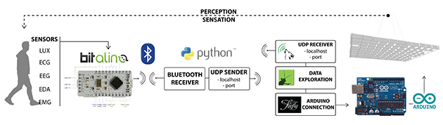
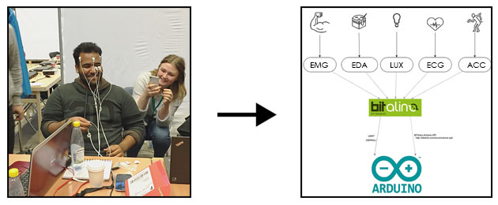
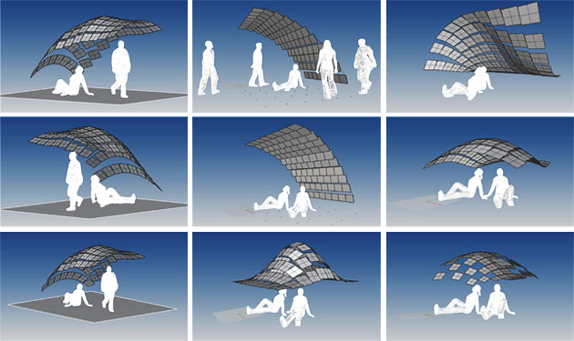
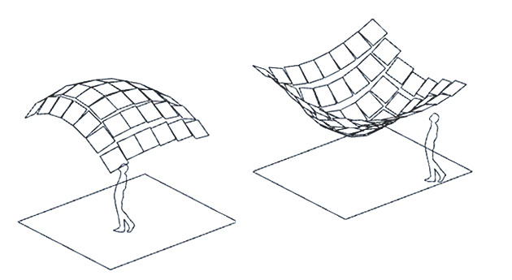
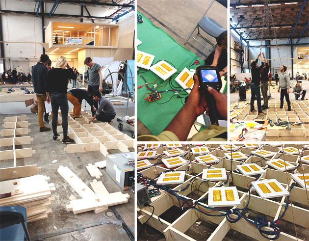
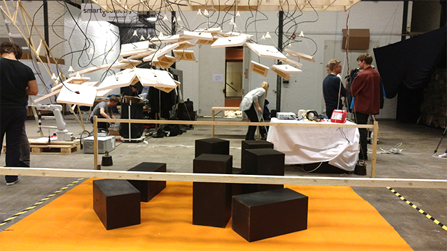

Atmospheric Delight
Overview
Test different spatial configurations of a sensorial environment that modifies its local thermal environment in relation to spatial and cognitive feedback
Description
Atmosphric Delight explored new methods to design through user experience, which were achieved by a close working relationship between architecture and cognitive science in the design and evaluation of an immersive physical environment and participants’ bio-responses. Parametric design, full-scale physical testing, and biometric data processing were linked under a hybrid cognitive and architectural research hypothesis. As a participant we all created different spatial configurations of an immersive environment generated using grasshopper and rhino and finally one was tested.
The immersive environment was created through a suspended field of 40 pre-assembled thermal modules that allowed different uses, such as social recreation and socialization. We tested different hypothesis by varying the intensity of the thermal modules relative to the location and subject's bio-responses.
Mentors
Berardo Matalucci, Dr. Alicia Ann Walf, Kenton Phillips
SmartGeometry, Chalmers University of Technology, Sweden, 2016

Response being measured in the final set-up of the immersive test scenario
Process diagram of the feedback loop
Thermal modules, which consisted of a localized source of heating, were pre-assembled and shipped to the location prior the workshop. Participants took an active role in the experimental procedure, wearing non-invasive bio-sensors for physiological data (e.g. heart rate, respiratory rate,skin temperature, etc.), and providing self-reports for experimental validation.
Biometrics and real-time sensing was calibrated and tested on a full-scale prototype. Non‐invasive biosensors sent the data to the heating modules which set the temperature accordingly. A real-time feedback loop was created to establish thermal comfort.
Various configurations of the immersive set-up were generated by the participants to test the experimentation using modeling software rhino and grasshopper. Disucssions were held on the pros andcons of these configurations and what the participants were trying to achieve. The final configuration was somewhat a mix of a general scenario which would help us gain an enclosure to get the desired results. Surveys on how the participants were feeling were also done.
This was the configuration that I came up with keeping it basic and uniform enabling us to study the effects at the central concentration of the field and the variation as one moves outward towards the corners.
 Set-up for the immersive test scenario using heat modules